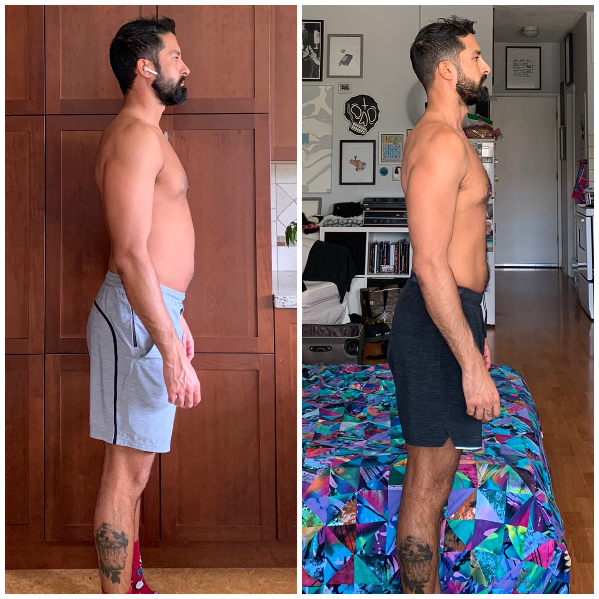
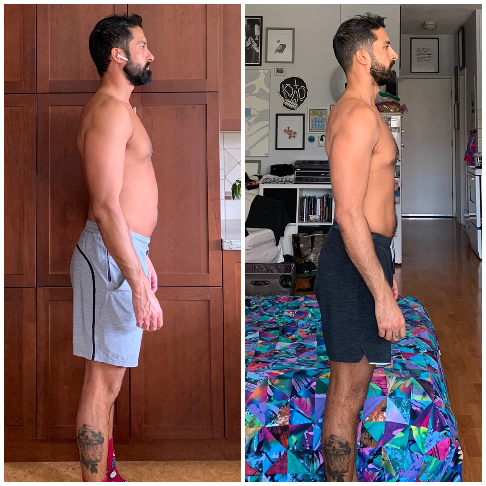

Adresa
Ulice za rohem 123
Brno
602 00


Ahoj, jsem nutriční terapeutka Jana Trefilková. Vystudovala jsem magisterské studium nutriční specialista na Lékařské fakultě Masarykovy univerzity a zároveň bakalářské studium Fitness coach na Fakultě Sportovních studií Masarykovy univerzity v Brně. Absolvovala jsem roční stáž v newyorské nemocnici, kde jsme se sestavovala jídelníčky pro lidi s nejrůznějšími nemocemi a půl roční stáž v Sydney, kde jsem měla svou ambulanci a zároveň jsem se zde účastnila závodu v bikini fitnes, kde jsem skončila na 6.miste. Nyní se věnuji především sestavování redukčních jídelníčku, dále pak sestavují tréninkové plány na míru a v neposlední řadě navštěvuji základní a střední školy a edukuji studenty zábavnou cestou v oblasti výživy
Nullam feugiat, turpis at pulvinar vulputate, erat libero tristique tellus, nec bibendum odio risus sit amet ante. Vel sagittis velit mauris vel metus. Curabitur vitae diam non enim vestibulum interdum. Duis bibendum, lectus ut viverra rhoncus, dolor nunc faucibus libero, eget facilisis enim ipsum id lacus. Fusce tellus odio, dapibus id fermentum quis, suscipit id erat. Nam quis nulla. Phasellus enim erat, vestibulum vel, aliquam a, posuere eu, velit. Aliquam id dolor. Et harum quidem rerum facilis est et expedita distinctio.
Dostudován bakalářský stupeň na lékařské fakultě MUNI - obor Nutriční terapie
Úspěšně absolvován 7-týdenní kurz osobního trenéra
Úspěšně dostudován magisterský stupeň na lékařské fakultě MUNI - obor Nutriční specialista
Exorcizamus te, omnis immundus spiritus, omnis satanica potestas, omnis incursio infernalis adversarii, omnis legio, omnis congregatio et secta diabolica. Ergo, omnis legio diabolica, adiuramus te... cessa decipere humanas creaturas, eisque æternæ perditionìs venenum propinare... Vade, satana, inventor et magister omnis fallaciæ, hostis humanæ salutis... Humiliare sub potenti manu Dei; contremisce et effuge, invocato a nobis sancto et terribili nomine... quem inferi tremunt... Ab insidiis diaboli, libera nos, Domine. Ut Ecclesiam tuam secura tibi facias libertate servire, te rogamus, audi nos.

Sestavení jídelníčku na míru, který bude optimálně nastaven a dále upravován dle vaších cílů a výsledků. Jídelníček se obvykle skládá z 6 jídel denně. Spolu se pokusíme porozumět tomu, co je pro vaše tělo nejlepší, ať už se jedná o kvalitní suroviny, nebo vhodně zvolenou dietu (redukční, nabírací, vegetariánská, dietní-pro celiaki(bezlepkové), diabetická...).
Přístroj InBody rozloží vaše tělo na čtyři složky, tělesný tuk, kosterní svalstvo, minerály a tělesnou vodu. InBody hodnoty neodhaduje, ale pomocí bio-elektrické impedanční analýzy určí velmi přesné výsledky. Měření na přístroji Inbody dokáže zjištit váš tělesný tuk, množství svalové tkáně v jednotlivých částech těla, celkové množství tělesné vody a další užitečné informace. Meření přístrojem InBody pomůže k tomu, abyste lépe pochopili své tělo a věděli, co přesně je potřeba změnit v cestě za lepší postavou.

Kompletní program v sobě zahrnuje pravidelné osobní konzultace, jak k potravě, tak ke cvičení. Vytvoření jídelníčku na míru a jeho úprava dle vašich potřeb a výsledků. Vytvoření vhodného tríninkového plánu do fitka i na doma. Součástí tohoto programu jsou i pravidelné kontroly a meření na přístroji InBody.
Mým největším úspěchem je řada spokojených klientů. Někteří z nich se dokonce zůčastnili fitness soutěží jako je bikini fitness, a mistrovství ČR v silovém trojboji. Alena K. a Tomáš R. se oba umístili na krásném 2. místě. Za své úspěchy také považuji zahraniční stáže v nutričních ambulancích. Měla jsem možnost navštívit vyhlášenou ambulanci v Sydney a také v New Yorku. Již během studia na vysokí škole jsem sestavovala jídelníčky pro mnoho osob s porruchami příjmu potravy a různými omezeními.

 

Kromě mých klientů jsem i já sama měla možnost zůčastnit se řady několika fitness soutěží. Loňský rok jsem se umístila mezinárodní soutěži nutričních terapeutů na 3. místě z celkovího počtu 82 soutěžících. Dříve jsem se účastnila soutěže bikini fitness, ve které se mi podařilo umístit se na 2. místě. Této soutěže jsem zanechala, abych se mohla naplno věnovat svým klientům.
Kromě níže zmíněných služeb poskytuji i jednorázové konzultace. Cena takové konzultace se odvíjí od věku a vašich požadavků, ale nejčastěji se cena pohybuje okolo 1000 Kč. Pokud máte zájem o mé služby, neváhejte mne emailem, nebo telefonicky kontaktovat.
Ulice za rohem 123
Brno
602 00
jana.trefilkova@seznam.cz
+420 605 887 577